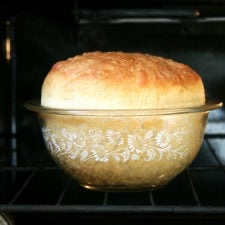

← All recipes
Peasant Bread

Servings: Yield: 2 loaves · Prep: 5 minutes · Cook: 32 minutes
Ingredients
- 4 cups (512 g) unbleached all-purpose or bread flour
- 2 teaspoons (10 g) kosher salt
- 2 cups (454 g) lukewarm water (made by mixing 1.5 cups cold water with 0.5 cup boiling water)
- 2 teaspoons (8 g) sugar
- 2 teaspoons (8 g) instant yeast, I love SAF Instant Yeast, see notes below
- room temperature butter, about 2 tablespoons
Directions
- Mixing the dough: In a large mixing bowl, whisk together the flour, salt, sugar, and instant yeast (I love SAF Instant Yeast). Add the water. Mix until the flour is absorbed. (If you are using active dry yeast, see notes below.)
- Let it rise. Cover bowl with a tea towel or plastic wrap and set aside in a warm spot to rise for at least an hour. (In the winter or if you are letting the bread rise in a cool place, it might take as long as two hours to rise.) This is how to create a slightly warm spot for your bread to rise in: Turn the oven on at any temperature (350ºF or so) for one minute, then turn it off. Note: Do not allow the oven to get up to 300ºF, for example, and then heat at that setting for 1 minute — this will be too hot. Just let the oven preheat for a total of 1 minute — it likely won’t get above 100ºF. The goal is to just create a slightly warm environment for the bread.
- Preheat the oven to 425ºF. Grease two 1-qt or 1.5-qt oven-safe bowls (see notes below) with about a tablespoon of butter each. Using two forks, punch down your dough, scraping it from the sides of the bowl, which it will be clinging to. As you scrape it down try to pull the dough toward the center (see video below for guidance). You want to loosen the dough entirely from the sides of the bowl, and you want to make sure you’ve punched it down. Then, take your two forks and divide the dough into two equal portions — eye the center of the mass of dough, and starting from the center and working out, pull the dough apart with the two forks. Then scoop up each half and place into your prepared bowls. This part can be a little messy — the dough is very wet and will slip all over the place. Using small forks or forks with short tines makes this easier — my small salad forks work best; my dinner forks make it harder. It’s best to scoop it up fast and plop it in the bowl in one fell swoop. Some people like to use flexible, plastic dough scrapers for this step.
- Let the dough rise again for about 20 to 30 minutes on the countertop near the oven (or near a warm spot) or until it has risen to just below or above (depending on what size bowl you are using) the top of the bowls. (Note: Do not do the warm-oven trick for the second rise, and do not cover your bowls for the second rise. Simply set your bowls on top of your oven, so that they are in a warm spot. Twenty minutes in this spot usually is enough for my loaves.)
- Bake it. Bake for 15 minutes. Reduce the heat to 375º and bake for 15 to 17 minutes longer. Remove from the oven and turn the loaves onto cooling racks. If you’ve greased the bowls well, the loaves should fall right out onto the cooling racks. If the loaves look a little pale and soft when you’ve turned them out onto your cooling racks, place the loaves into the oven (outside of their bowls) and let them bake for about 5 minutes longer. Remove from oven and let cool for 10 minutes before cutting.
- If the original recipe doesn’t work, try adding a little bit more water because it rises fast and it is so dry: about a quarter cup for every 512 g of flour.
- Try decreasing the yeast to 1.5 teaspoons.
- If your dough is especially gooey, try decreasing the water by 1/4 cup. But, if you aren’t using a scale, my first suggestion would be to buy a scale and weigh the flour, and make the bread once as directed with the 2 cups water and 512 grams flour, etc.
- Punch the dough down twice before transferring it to the buttered Pyrex bowls. In other words, let it rise for 1-1.5 hours, punch it down, let it rise again for about an hour, punch it down, then transfer it to the buttered bowls.
- Variations:
- #1. Cornmeal. Substitute 1 cup of the flour with 1 cup of cornmeal. Proceed with the recipe as directed.
- #2. Faux focaccia. Instead of spreading butter in two Pyrex bowls in preparation for baking, butter one 9×9-inch glass baking dish and one Pyrex bowl or just butter one large 9×13-inch Pyrex baking dish. If using two vessels, divide the dough in half and place each half in prepared baking pan. If using only one large baking dish, place all of the dough in the dish. Drizzle dough with 1 tablespoon of olive oil (if using the small square pan) and 2 tablespoons of olive oil (if using the large one). Using your fingers, gently spread the dough out so that it fits the shape of the pan. Use your fingers to create dimples in the surface of the dough. Sprinkle surface with chopped rosemary and sea salt. Let rise for 20 to 30 minutes. Bake for 15 minutes at 425ºF and 17 minutes (or longer) at 375ºF. Remove from pan and let cool on cooling rack.
- #5. Everything Bagel Seasoning Bread. Simply coat the buttered bowls with Everything Bagel Seasoning.
- #6: Whole Wheat Peasant Bread. Use as much as 50% whole wheat flour.
Notes
The bowls: The cheapest, most widely available 1-qt bowl is the Pyrex 322. Update: These bowls are becoming harder to find and more expensive. As a result, I’m suggesting this cheaper option: the Pyrex 3-piece set. You can split the dough in half as always (see recipe) and bake half in the 1-quart bowl and half in the 1.5 quart bowl. The loaves will not be the same shape, but they will be delicious nonetheless.
Yeast: I buy SAF Instant Yeast in bulk from Amazon I store it in my fridge or freezer, and it lasts forever. If you are using the packets of yeast (the kind that come in the 3-fold packets), just go ahead and use a whole packet — It’s 2.25 teaspoons. I have made the bread with active dry, rapid rise, and instant yeast, and all varieties work. The beauty of instant yeast is that there is no need to “proof” it — you can add the yeast directly to the flour. I never use active-dry yeast anymore.
If you have active-dry yeast on hand and want to use it, here’s how: In a small mixing bowl, dissolve the sugar into the water. Sprinkle the yeast over top. There is no need to stir it up. Let it stand for about 10 to 15 minutes or until the mixture is foamy and/or bubbling just a bit — this step will ensure that the yeast is active. Meanwhile, in a large bowl, whisk together the flour and salt. When the yeast-water-sugar mixture is foamy, stir it up, and add it to the flour bowl. Mix until the flour is absorbed.
Troubleshooting: You can find step-by-step video instruction here.
Several commenters have had trouble with the second rise, and this seems to be caused by the shape of the bowl they are letting the dough rise in the second time around. Two hours for the second rise is too long. If you don’t have a 1-qt bowl, bake 3/4 of the dough in a loaf pan and bake the rest off in muffin tins or a popover pan. The second rise should take no more than 30 minutes.
Also, you can use as many as 3 cups of whole wheat flour, but the texture changes considerably. I suggest trying with all all-purpose or bread flour to start and once you get the hang of it, start trying various combinations of whole wheat flour and/or other flours.
The single most important step you can take to make this bread truly foolproof is to invest in a digital scale. This onecosts under $10. If you are not measuring by weight, do this: scoop flour into the measuring cup using a separate spoon or measuring cup; level off with a knife. The flour should be below the rim of the measuring cup.
Here’s a printable version of this recipes that’s less wordy: Peasant Bread Recipe, Simplified
How to Bake the Peasant Bread in a Dutch Oven: Preheat a Dutch Oven for 45 minutes at 450ºF. Dust a clean work surface with flour. After the first rise, turn the dough out onto the floured surface and shape it into a ball: I like to fold it envelope style from top to bottom, then side to side; then I flip it over and use the pinkie edges of my hands to pinch the dough underneath and create some tension. Transfer the dough to a sheet of parchment paper. Let rest for 20 minutes. If you feel your dough is spreading too much you can lift up the sheet of parchment paper, dough and all, and place it in a bowl of a similar size. After the 20 minutes, transfer the dough, parchment paper and all to the Dutch oven. Carefully cover it. Bake 30 minutes. Uncover. Bake 15 minutes more.
To bake the peasant bread in a loaf pan: If you are using an 8.5×4.5-inch loaf pan or a 9×5-inch loaf pan, you can bake 3/4 of the dough in it; bake off the rest of the dough in ramekins or other small vessels … the mini loaves are so cute. You can also make 1.5x the recipe, and bake the bread in 2 loaf pans. If you have a large loaf pan, such as a 10×6-inch loaf pan, you can bake off the entire batch of dough in it. For loaf pans, bake at 375ºF for 45 minutes.
How to Bake at Hight Altitude:
Original source: alexandracooks.com